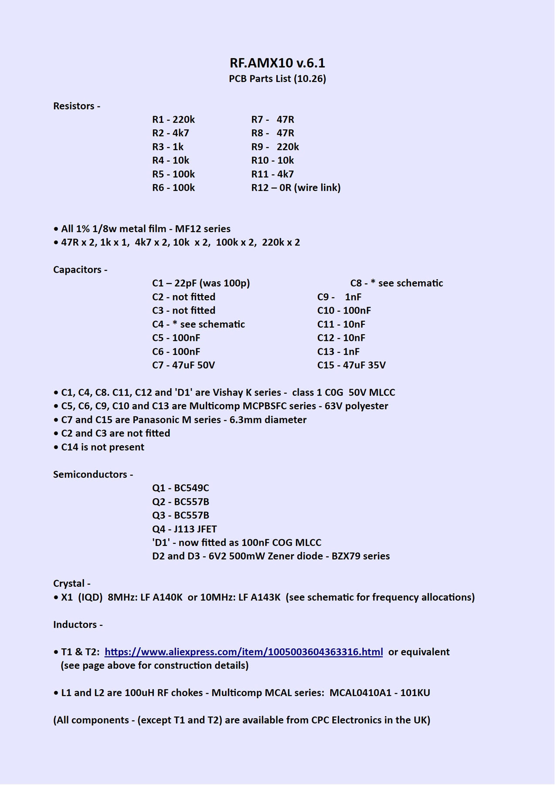

The image above is the component and ident side of the project PCB. The PCB has been designed by Group DIY member KHRON.
My thanks to him for his patience and expertise - this layout is the last of several he patiently modified as the project developed - Without his contribution, the project would have been a lot less advanced by this time! .. again, my thanks.
The PCB is designed to fit into a 'standard' low cost Chinese BM800/NW700 style 'donor' body. These microphones are available cheaply from a number of online sources, and seem to be an obvious choice for a project like this.
• A zip folder of all the Gerber files for the PCB can be found HERE •
The first batch created from that Gerber folder for this project was manufactured in China by
JLCPCB at a cost of only $2 - plus shipping of course...
Good quality PCBs - and delivered quickly if you pay a shipping premium!
Excellent value, in my opinion ... The parts list for the PCB is shown below...
• Just click on the document image below to download a PDF version •
